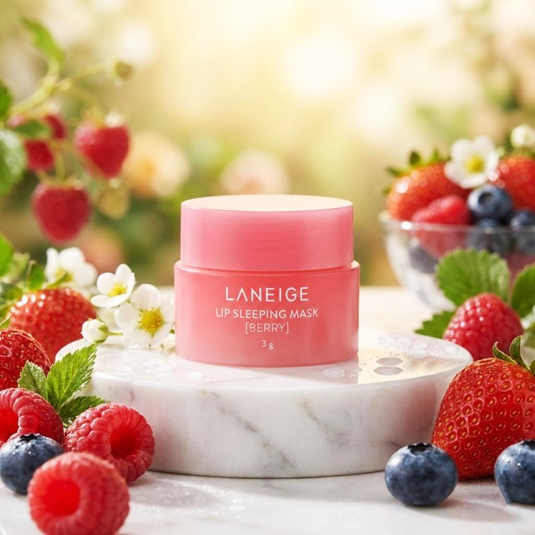
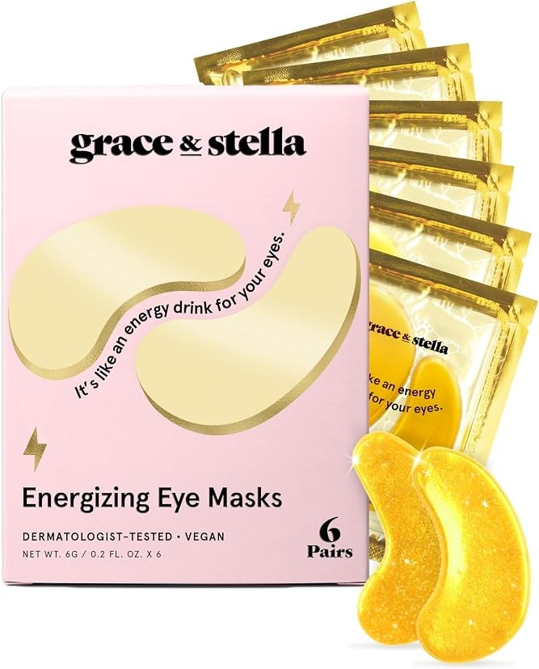
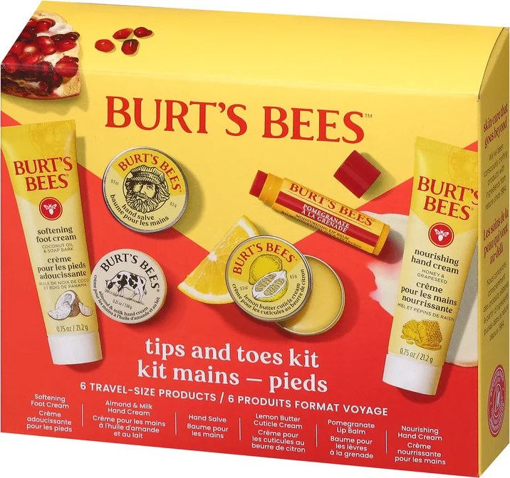
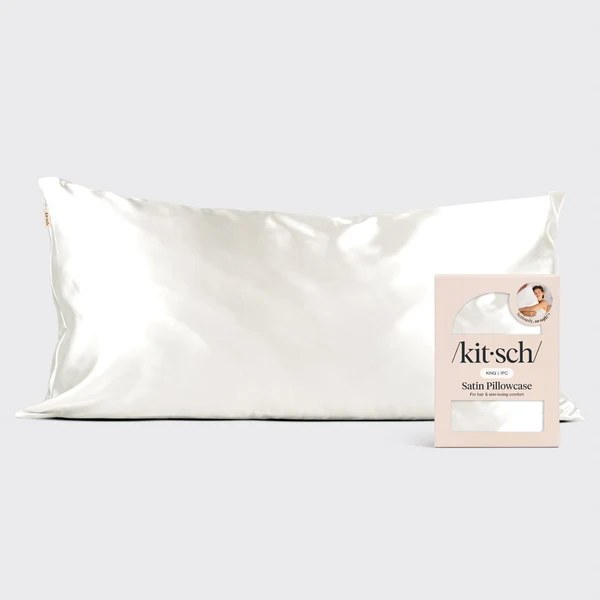
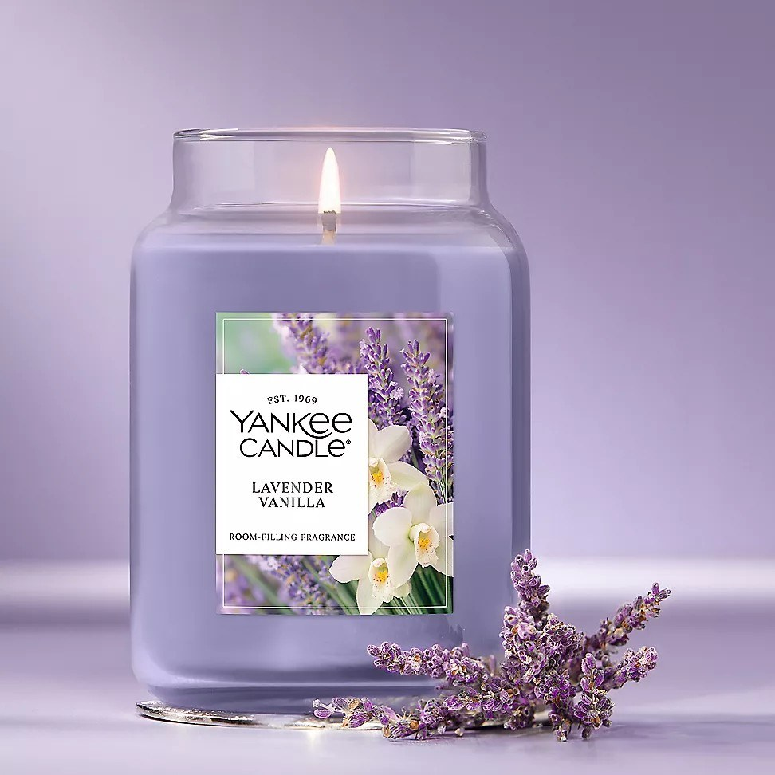
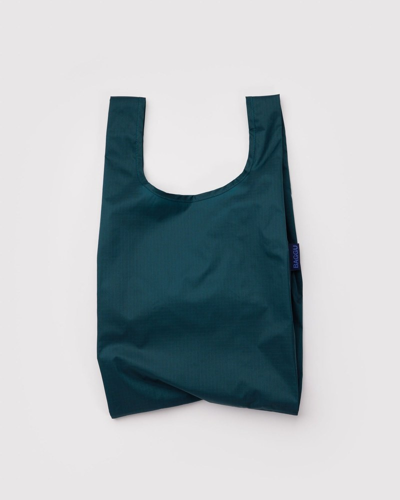
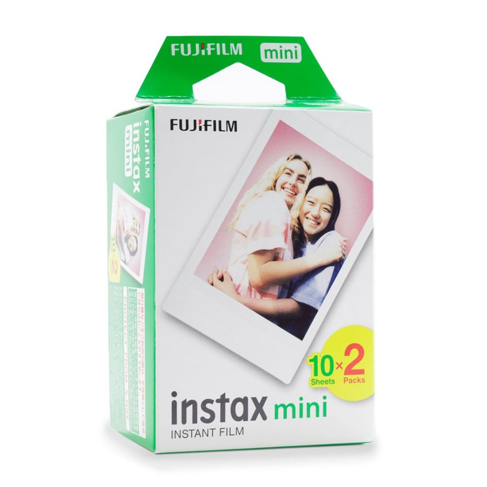
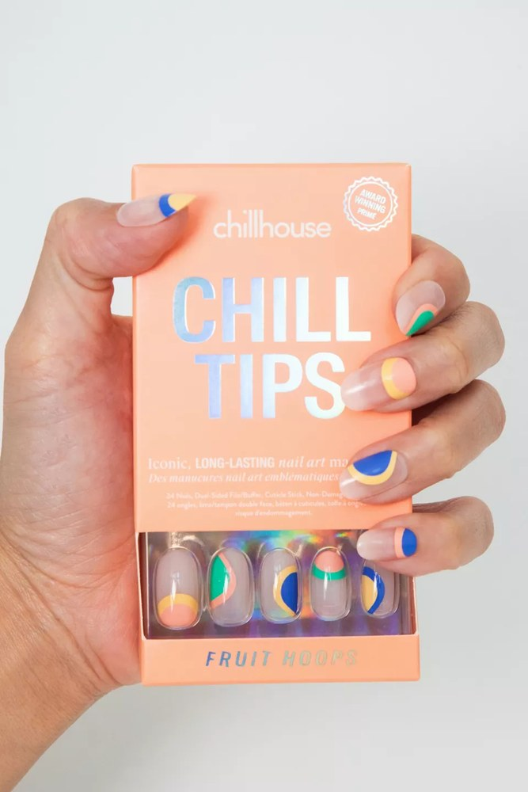
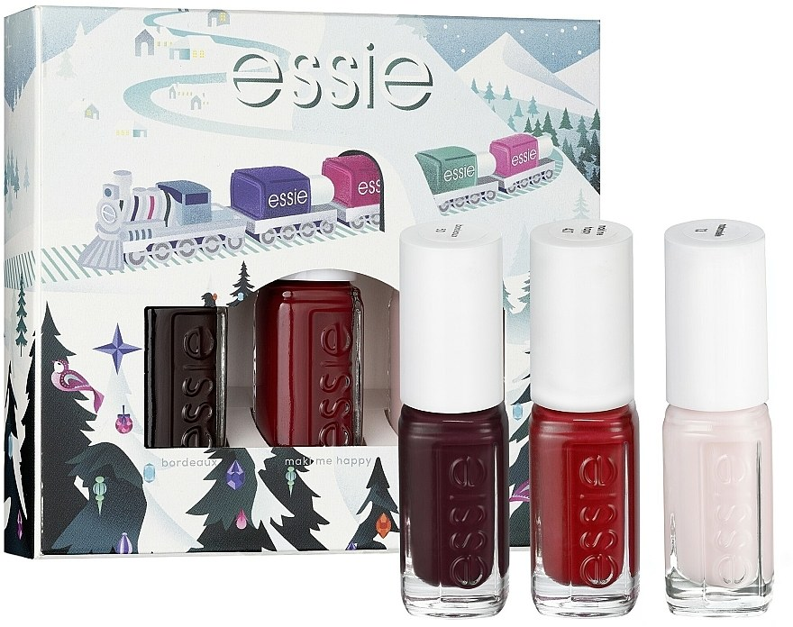
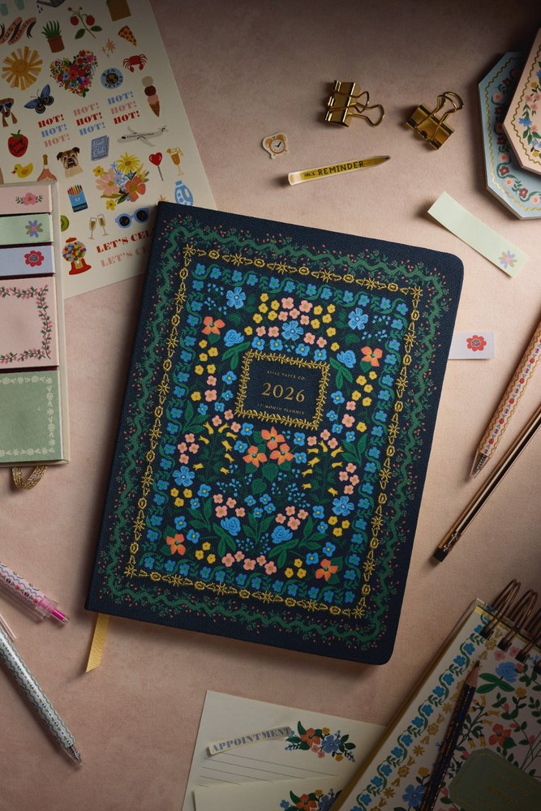

The 10 Best Gifts Under $25 for Women (2026 Holiday Gift Guide)
Shopping for a woman who "doesn't need anything" is its own special puzzle. She has the big things. She returns the fancy things. And the fastest way to land in the re-gift pile is a generic candle set from a brand nobody's heard of.
The fix is the same rule behind our men's guide: buy something she'd happily buy for herself but never quite gets around to ordering. Every gift below is under $25, from a brand she'd recognize on sight, and — most importantly — it's the kind of thing that gets used up, worn out, or reached for weekly. These are the gifts that earn a text in January saying "okay, I need another one."
How we picked these
- Under $25, really. No "was $60, now $24.99 for the next 40 minutes" games. If a gift can't stay near $25, it didn't make the list.
- Recognizable brands or proven bestsellers. No-name gadgets with 14 reviews and suspiciously perfect English didn't qualify.
- Weekly-use potential. A gift has to earn its drawer space. If she'll reach for it constantly — or use it up and want more — it's in.
We did not accept payment for placement, and we re-check prices before the holiday season each year.

1. Laneige Lip Sleeping Mask (Berry) — the can't-miss hero gift
The viral K-beauty lip mask that started a thousand routines: a rich overnight balm in the iconic Berry scent, ranked #11 in lip balms on Amazon and a top-300 beauty product overall. One tiny jar lasts for months, which makes the sub-$25 price feel like a steal.
- Pros: instantly recognizable cult brand; winter-timed (dry-lip season); a little goes a long way.
- Cons: tons of knockoffs online — buy from the real listing, not a lookalike.
Best for: the safe pick when you have no idea what to buy.
Check current price
2. grace & stella Under Eye Gel Patches (Gold, 24 pairs) — the celebrity self-care staple
The award-winning gold under-eye masks with over 45,000 Amazon ratings at 4.4 stars — worn by celebrities, gifted at every girls' night, and the definition of a stocking stuffer she'd actually use. Twenty-four pairs means the gift keeps giving well past Christmas.
- Pros: proven bestseller with deep review history; fun, giftable packaging; pairs per box beat single masks on value.
- Cons: each pair is single-use; double-check you're on the 24-pair listing at checkout.
Best for: the friend who "doesn't want anything" — consumables always win.
Check current price
3. Burt's Bees Tips and Toes Gift Kit — the canonical sub-$15 gift set
Six travel-size Burt's Bees favorites — hand salve, cuticle cream, lip balm, hand and foot creams — in a gift-ready box, usually around $13. It's the rare gift set where every single item gets used, and the brand has been trusted since before gift guides existed.
- Pros: gift-ready packaging; every product is a proven classic; unbeatable price for six items.
- Cons: travel sizes run out fast — that's also why it works as a gateway gift.
Best for: teachers, coworkers, and anyone on the "nice but not close" list.
Check current price
4. Kitsch Satin Pillowcase (Ivory) — the beauty-sleep upgrade
"Softer than silk" is the pitch, and the #2 pillowcase on Amazon backs it up: a satin pillowcase with a zipper closure that's gentler on hair and skin than cotton. It's the gift version of something she uses every single night — the highest weekly-use score on this list.
- Pros: genuine nightly use; hair + skin angle she'll feel in a week; elegant gift look.
- Cons: satin wrinkles more than cotton; confirm the size matches her pillows.
Best for: moms, sisters, and anyone who'd never buy this for themselves.
Check current price
5. Yankee Candle 22oz Large Jar (Lavender Vanilla) — the candle gift archetype
When someone says "just get her a candle," this is the candle: a 22oz Yankee jar with 110–150 hours of burn time, from the heritage American brand whose listing literally carries "Giftable" in the title. Lavender Vanilla is the crowd-pleaser scent — cozy without being divisive.
- Pros: enormous burn time for the price; unmistakable heritage brand; deal-drops under $25 regularly.
- Cons: scent is personal — if she's picky, the pillowcase is safer.
Best for: the classic mom/grandmother/hostess gift.
Check current price
6. BAGGU Standard Reusable Bag (Set of 3) — the cult everyday carry
Over a million sold: the Brooklyn brand's recycled ripstop nylon tote that folds into a tiny pouch and carries a full grocery run. The set of 3 makes it giftable — one for the car, one for the purse, one for the kitchen drawer — and it reads far more premium than its price.
- Pros: cult brand with real design cred; genuinely useful daily; the 3-pack solves the "is a bag a gift?" question.
- Cons: minimalists might still side-eye it — pair with the Laneige for a sure thing.
Best for: the eco-conscious friend and the farmers-market regular.
Check current price
7. Fujifilm Instax Mini Instant Film Twin Pack (20 sheets) — the perfect companion gift
Twenty sheets of Instax Mini film for around $15 — the stocking stuffer for anyone who owns (or is getting) an Instax camera. Film is the consumable every instant-camera owner burns through, which makes this the rare gift that's both cheap and exactly right.
- Pros: the ideal add-on gift; holiday-party photo fuel; tiny price, big smile.
- Cons: useless without a camera — only gift it with intent.
Best for: teens, college kids, and party hosts with a camera on the shelf.
Check current price
8. Chillhouse Chill Tips Press-On Nails Kit — the skip-the-salon gift
Salon-grade nail art at home from the women-owned SoHo brand: press-on tips tested to wear up to three weeks, in designs that actually look like a manicure. At around $14 it's a fraction of one salon visit — the math sells itself.
- Pros: legitimately good wear time; fun, giftable designs; the "treat yourself" energy without the $80 bill.
- Cons: press-ons aren't for everyone; nail sizing takes one try to dial in.
Best for: the friend who's always getting her nails done.
Check current price
9. essie 4-Piece Holiday Mini Nail Polish Set — the at-home polish companion
Four mini bottles from America's nail expert since 1981, in a holiday gift box with seasonal shades. The vegan 8-free formula is the quality anchor, and minis are the right size — enough to love a color, small enough to finish before it goes gloopy.
- Pros: heritage brand, gift-ready box; pairs naturally with the Chillhouse kit (salon look vs. at-home polish).
- Cons: minis are small — this is a stocking gift, not a main gift.
Best for: stockings, Secret Santa, and the polish collector.
Check current price
10. Rifle Paper Co. 2026 Delphine 12-Month Planner — the pretty-and-practical pick
Hand-painted florals by Anna Bond, metallic gold foil accents, and thread-stitch binding — the planner that people buy as an object of desire and then actually use. Timed perfectly for 2026 planning season, and it photographs beautifully in a gift bag.
- Pros: genuinely gorgeous; practical all year; the floral design matches our site's whole aesthetic.
- Cons: planners are personal — only for the paper-planning type, not the phone-calendar loyalist.
Best for: the organized friend, the journaler, the list-maker.
Check current priceQuick comparison
| Gift | Best for | Why it wins |
|---|---|---|
| Laneige Lip Mask | The safe pick | Cult brand, winter-timed, ~$23 |
| grace & stella Eye Patches | Self-care lovers | 45K+ ratings, 24 pairs |
| Burt's Bees Tips & Toes | Coworkers / teachers | Six classics, ~$13 |
| Kitsch Satin Pillowcase | Moms & sisters | Used every single night |
| Yankee Candle 22oz | The classic gift | 110–150h burn, heritage brand |
| BAGGU Set of 3 | Eco-conscious friends | Cult design, 1M+ sold |
| Instax Mini Film | Stockings | Perfect camera companion, ~$15 |
| Chillhouse Chill Tips | Nail girls | 3-week wear, skip the salon |
| essie Holiday Minis | Secret Santa | Heritage brand, gift box |
| Rifle Paper Co. Planner | The organized one | Gorgeous + useful all year |
Frequently asked questions
What is the best gift under $25 for a woman who has everything?
Go consumable: the Laneige lip mask, the grace & stella eye patches, or the Burt's Bees gift kit. Women who "have everything" have everything except the nice version of the everyday thing — a cult lip treatment or a box of gold eye masks beats another novelty every time.
Are cheap gifts under $25 actually good?
Some are, most aren't. The difference is brand credibility and review depth: grace & stella has 45,000+ ratings, the Kitsch pillowcase line has tens of thousands. A no-name $25 item with 14 reviews is a gamble; an established brand's $25 item with five figures of reviews is a proven product. Everything on this list is the second kind.
What are good stocking stuffers for women?
The Instax film twin pack, the essie holiday minis, the Chillhouse press-on kit, and the BAGGU set all fit in a stocking and cost well under $25. Small, useful, no learning curve — the holy trinity of stocking stuffers.
What should I get my mom for Christmas?
The Yankee Candle 22oz jar is the timeless answer — big, beautiful, and unmistakably a gift. The Rifle Paper Co. planner works for the organized mom, and the Kitsch satin pillowcase is the "she'd never buy it herself" upgrade she'll use nightly.
Do I need to spend more than $25 for a good gift for her?
No — and this list is the proof. The best gifts aren't the most expensive ones; they're the ones matched to something she already does. A $15 film pack for the camera owner beats a $50 gadget she'll never touch. Match the gift to the habit, not the budget.
The bottom line
The best gift under $25 for a woman isn't the cleverest one — it's the one that gets used. Match the pick to something she already does every week (her skincare routine, her nails, her morning coffee with a planner) and you'll give the rare gift that earns its place. Buying for a man instead? Our gifts under $25 for men guide has ten more proven picks — and our kitchen gadgets under $25 guide covers the cook in your life.
Prices on Amazon change frequently. We re-check this guide before each holiday season, but always confirm the current price on the product page before you buy. As an Amazon Associate, we earn from qualifying purchases made through the links above.